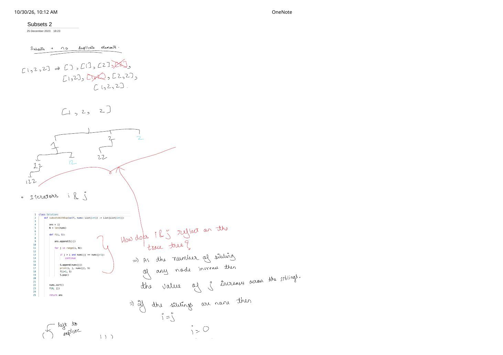
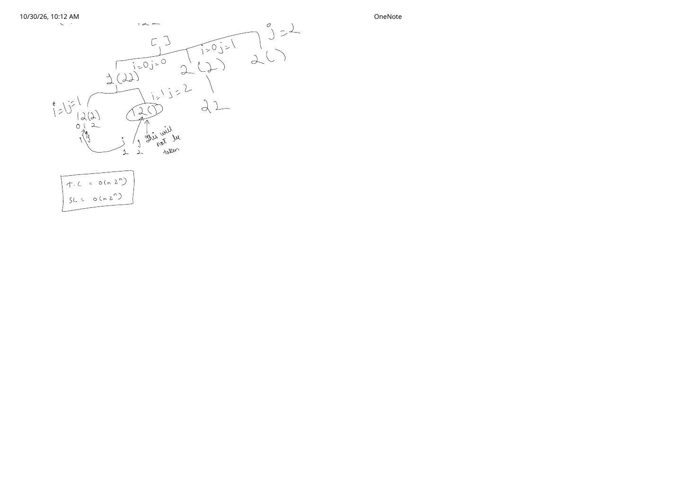

Subsets II (LeetCode 90): Duplicate Pruning via Iterators i & j
Expanded from handwritten competitive coding study note: 03_Subsets_2.pdf
The line if (j > i && nums[j] == nums[j - 1]) continue; is one of the most memorized—and least understood—guards in competitive programming. Both pages of 03_Subsets_2.pdf are dedicated to answering a single structural question: how do the two indices i and j reflect on the recursion trace tree, and why does j > i delete duplicate subsets while keeping multi-occurrence subsets like [2, 2] and [1, 2, 2] intact?
Problem Statement
LeetCode 90 · Subsets II
Given an integer array nums that may contain duplicates, return all possible unique subsets (the power set). The solution set must not contain duplicate subsets.
Example from note: nums = [1, 2, 2] → naive Subsets I yields 8 subsets:
[], [1], [2], [2][1, 2], [1, 2][2, 2], [1, 2, 2] → 6 unique subsets.
Intuition: How i and j Reflect on the Trace Tree
Suppose we first sort nums so equal values sit adjacent (for example, [2, 1, 2] → [1, 2, 2] at indices 0, 1, 2). Inside a recursive call f(i, S), we run for j in range(i, N):
03_Subsets_2.pdf (Page 1)
iis fixed for the entire parent call: It marks the first index in the remaining pool left to explore below the parent node.jmoves horizontally across siblings: As the number of children (siblings) spawned by the same parent node increases from left to right,jincrements:j = i, i + 1, i + 2, ....- Leftmost child (no prior siblings at this depth) has
j == i: Even ifnums[j] == nums[j - 1], elementnums[j - 1]was picked by our parent one level up—pickingnums[j]extends a valid multi-copy subset like[2] → [2, 2]or[1, 2] → [1, 2, 2]! - Later siblings at the same depth have
j > i: Ifnums[j] == nums[j - 1]whenj > i, then our immediate left sibling at this exact tree depth already tried putting that value into this slot—with a strictly larger remaining suffix! Tryingnums[j]again here can only regenerate duplicates.
Exact Node-by-Node (i, j) Trace Tree (03_Subsets_2.pdf, Page 2)
In the handwritten trace, parentheses denote elements left to explore to the right of the chosen index—for example, picking index 0 on [1, 2, 2] writes 1(2,2):
03_Subsets_2.pdf. Compare the two places where j = 2 is reached under [1]: vertically down [1, 2] → [1, 2, 2] has i = 2, j = 2 (kept!), whereas horizontally from [1] to its second child has i = 1, j = 2 with nums[2] == nums[1] (pruned!).Brute → Better → Optimal Progression
- Brute Force (Generate $2^n$ subsets +
std::set<vector<int>>): Sortnums, generate all $2^n$ subsets ignoring duplicates, and insert each vector into a set. Even when all elements are equal ([2, 2, ..., 2], which has only $n + 1$ unique subsets!), brute force still expands all $2^n$ branches and pays $O(n \cdot 2^n \log(2^n)) = O(n^2 \cdot 2^n)$ set-comparison overhead. - Pick / Not-Pick with Run-Skipping: Sort
nums; in the Pick branch recurse toi + 1, and in the Not-Pick branch advancewhile (i + 1 < n && nums[i + 1] == nums[i]) ++i;before recursing toi + 1. Optimal, though answers only appear at leaves. - Optimal Forward
for-Loop withj > iGuard (from Note): Sort once in $O(n \log n)$ and prune duplicate siblings before recursing. On[2, 2, ..., 2], the tree collapses to a single chain of $n + 1$ nodes!
Python (Exact Match to Note) & C++ Implementations
Notice in page 1 of 03_Subsets_2.pdf how inserting print(i, j, nums[j], S) right before recursing prints the exact 5 non-root calls shown in green in our diagram above:
# Exact implementation from 03_Subsets_2.pdf (page 1)
class Solution:
def subsetsWithDup(self, nums: list[int]) -> list[list[int]]:
ans: list[list[int]] = []
n = len(nums)
def f(i: int, s: list[int]) -> None:
ans.append(s[:])
for j in range(i, n):
if j > i and nums[j] == nums[j - 1]:
continue
s.append(nums[j])
# Debug trace from note: print(i, j, nums[j], s)
f(j + 1, s)
s.pop()
nums.sort()
f(0, [])
return ans#include <algorithm>
#include <vector>
using namespace std;
class Solution {
void dfs(int i, const vector<int>& nums,
vector<int>& path, vector<vector<int>>& ans) {
ans.push_back(path);
for (int j = i; j < (int)nums.size(); ++j) {
// Skip duplicate sibling at the SAME tree depth; allow j == i (first child)
if (j > i && nums[j] == nums[j - 1]) continue;
path.push_back(nums[j]);
dfs(j + 1, nums, path, ans);
path.pop_back();
}
}
public:
vector<vector<int>> subsetsWithDup(vector<int>& nums) {
sort(nums.begin(), nums.end()); // O(n log n): groups equal numbers together
vector<vector<int>> ans;
vector<int> path;
path.reserve(nums.size());
dfs(0, nums, path, ans);
return ans;
}
};Time & Space Complexity
- Time Complexity: $O(n \log n + n \cdot 2^n) = O(n \cdot 2^n)$ in the worst case (when all $n$ elements are distinct). More tightly, if distinct values have multiplicities $c_1, c_2, \dots, c_m$, only $\prod_{t=1}^{m} (c_t + 1) \le 2^n$ unique subset nodes are ever visited!
- Auxiliary Space Complexity: $O(n)$ for the recursion call stack and active
path. - Total Space (Including Output): $O(n \cdot 2^n)$, matching the boxed bound on page 2 of
03_Subsets_2.pdf.
Key Edge Cases & Classic Bugs
Three Easy Mistakes to Avoid
- Forgetting
sort(nums.begin(), nums.end()): Onnums = [2, 1, 2], adjacent checknums[j] == nums[j - 1]never sees the two2s next to each other, leaking duplicate subsets like[2](twice) and[2, 1]vs[1, 2]! - Writing
j > 0instead ofj > i: Writingif (j > 0 && nums[j] == nums[j - 1]) continue;blocksj == itoo, which deletes valid subsets with repeated values like[2, 2]and[1, 2, 2]! - When you are NOT allowed to sort (e.g., LeetCode 491, Non-decreasing Subsequences): If the problem requires preserving original array order, replace sorting +
nums[j] == nums[j - 1]with a localunordered_set<int> usedAtThisDepthdeclared insidedfs.
From the Handwritten Notes
View original handwritten page — 03_Subsets_2.pdf (Page 1: Python code & iterator i, j rule)


03_Subsets_2.pdf, page 1: crossing out duplicate [2] and [1, 2] on [1, 2, 2], Python subsetsWithDup implementation, and red-ink explanation of how j grows across siblings while i == j when there are no prior siblings.View original handwritten page — 03_Subsets_2.pdf (Page 2: Complete (i, j) trace tree & complexity)


03_Subsets_2.pdf, page 2: full node-by-node (i, j) trace pinpointing why 12() at i = 1, j = 2 is skipped while 22 remains valid, plus boxed $O(n \cdot 2^n)$ time and space bounds.